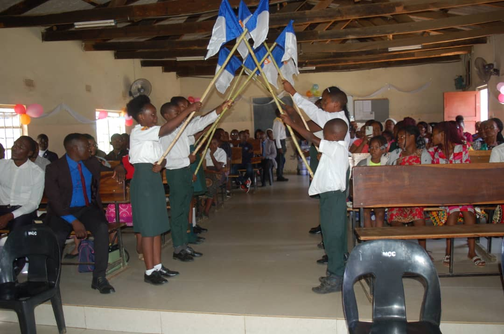
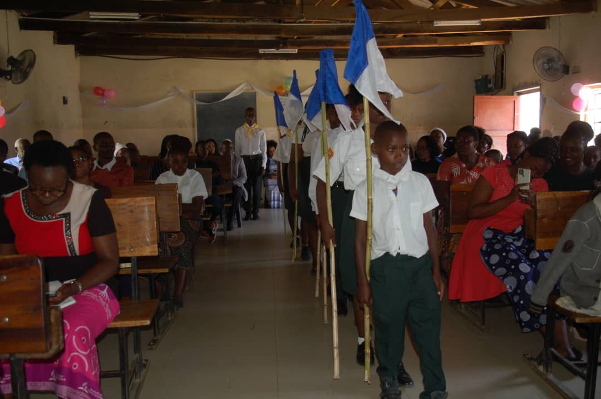

Pathfinder Club
A worldwide Seventh-day Adventist Church youth ministry combining outdoor adventure, skill-building, and spiritual growth for young people ages 10 to 15.
1950
Officially Adopted
~2M
Members Worldwide
400+
Honors Offered
6
Class Levels
Aim, Motto, Pledge & Law
The Advent message to all the world in my generation.
The love of Christ compels us.
"By the grace of God, I will be pure and kind and true. I will keep the Pathfinder Law. I will be a servant of God and a friend to man."
checkKeep the morning watch
checkDo my honest part
checkCare for my body
checkKeep a level eye
checkBe courteous and obedient
checkWalk softly in the sanctuary
checkKeep a song in my heart
checkGo on God's errands

A Triangle With Meaning
The Pathfinder emblem is built around a triangle — a symbol of the Trinity, and of the "tripod" balance the program aims for in every member: mental growth through honors and study, physical development through camping and outdoor life, and spiritual maturity through outreach and personal devotion.
The triangle is deliberately inverted, a quiet reminder of Christ's teaching that greatness is found in service — putting others first rather than self. The club flag carries this same emblem and is flown at local and conference Pathfinder events.
A Century in the Making
The General Conference establishes the Young People's Department, the first formal step toward organized Adventist youth ministry.
Arthur W. Spalding organizes a small boys' club in Tennessee called the "Mission Scouts," combining camping and handicrafts with community service — and drafts the pledge and law that would later shape the Pathfinder Pledge and Law.
The name "Pathfinder" is used for the first time on a schedule of Adventist youth activities in Southern California.
The General Conference formally adopts the Pathfinder Club as a worldwide program at its session in San Francisco, complete with a uniform, flag, and hymn.
The first Pathfinder Camporee is held in Ashburnham, Massachusetts — the beginning of the large camporee gatherings that continue worldwide today.
The Pathfinder world emblem replaces the older Missionary Volunteer insignia, giving the club the triangular logo still used today.
A major curriculum overhaul modernizes teaching methods across Pathfinder clubs worldwide.
Pathfinders remains one of the largest youth ministries in the Adventist Church, welcoming young people of any background who commit to the Pledge and Law.
Six Class Levels
Pathfinders progress through six grade-based classes, each recognized with a class pin, pocket strip, and chevron at an Investiture ceremony.
| Class | Grade | Recites | Sample Honors |
|---|---|---|---|
| Friend | 5th | Pathfinder Pledge & Law | Camping Skills I, Basic Sewing, Beginning Swimming |
| Companion | 6th | Pathfinder Pledge & Law | Drilling and Marching, Leather Craft, Camping Skills II |
| Explorer | 7th | Pathfinder Pledge (meaning) | Family Life, Track and Field, Basic Rescue |
| Ranger | 8th | Pathfinder Pledge & Law (meaning) | First Aid, Photography, Camping Skills IV |
| Voyager | 9th | Adventist Youth Aim, Motto & Pledge | Advanced Communications, Outdoor Leadership |
| Guide | 10th | Adventist Youth Aim, Motto & Pledge | Christian Drama, Pioneering, Junior Youth Leadership |


Over 400 Ways to Learn
Each honor is a short course of study in a practical subject — arts and crafts, health and science, household skills, nature and conservation, outdoor industries, outreach, recreation, and vocational trades. Honors are organized into three skill levels, from introductory knowledge to advanced proficiency.
Completed honors are displayed as patches on the Pathfinder's sash and awarded formally at an Investiture ceremony alongside class pins and chevrons — a visible record of every subject a young person has mastered along the way.
How the Club Is Run
Pathfinders is a worldwide program directed by the General Conference Youth Department, operated locally under the oversight of the conference youth director.
Leadership Team
Each club is led by a club director, deputy directors, counselors, instructors, a chaplain, secretary, and treasurer — all trained volunteers.
Units
Members are organized into small units of six to eight Pathfinders, each with its own captain and scribe, keeping mentorship close and personal.
Investiture
A formal ceremony marks the completion of each class level, where members receive their pin, pocket strip, and chevron.
What Pathfinders Do
Camporees
Large multi-club camping gatherings held at conference and division level, featuring drill, honors, and worship.
Community Service
Soup kitchens, food collection drives, park clean-ups, and visits to the elderly — service is central to Pathfindering.
Honors & Skills
Interactive training across recreational, artistic, nature, vocational, and outreach subjects.
Mentorship
A ratio of at least one trained staff member for every five Pathfinders ensures close, personal guidance.
Ready to Join Pathfinders?
The Pathfinder Club welcomes young people ages 10–15 of any background who agree to keep the Pledge and Law. Speak with our club director to find out about meeting times and registration.